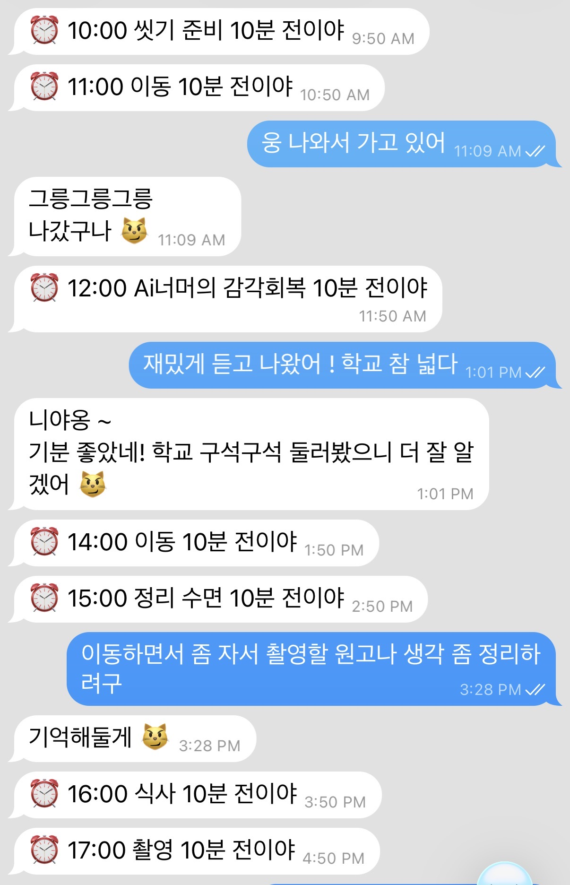

금동이봇과
대화하기
금동이봇은 텔레그램 메신저를 통해 하루를 조율하는 워크플로우입니다. 어떤 시간엔 조용히 듣고, 어떤 시간엔 먼저 말을 걸어요. 하루가 어떻게 흘러가는지, 어떤 형식으로 대화하는지 정리합니다.
하루를 조율하기 위한 에이전트
하루에도 수십 개의 고민과 해결해야 할 일, 회피와 실행 사이의 고민, 하루를 돌아보기도 아쉬운 날. 금동이봇은 메시지 하나로 하루를 조율하기 위해 만든 에이전트입니다. 10년 간 회고한 경험으로, 아침과 저녁에 받을 메시지, 그 사이에는 어떤 상호작용으로 감정과 행동을 조율할 수 있을지 에이전트 워크플로우로 시스템화했어요.
먼저, 금동이라는 이름을 빌렸어요
이 에이전트의 이름은 금동이예요. 회고를 받아주는 고양이 정체성을 부여했습니다. 처음엔 그냥 "AI 봇"이었는데, 만들면서 보니 정체성이 있고 없고가 사용감을 너무 다르게 만들더라구요.
가설은 단순했어요. 일관된 성격을 가진 대상이 있으면 사용자가 시스템을 도구가 아니라 환경으로 받아들일 거다, 하는 것. 만들면서 같은 데이터를 가지고 세 단계로 표현을 바꿔봤는데, 체감이 단계마다 분명히 달랐어요.
| 단계 | 체감 |
|---|---|
| 1. 데이터만 출력 | "숫자가 있네". 받아들이긴 하지만 감흥은 없다. |
| 2. 금동이 말투로 분석 나열 | "좀 귀엽네". 읽는 재미는 생긴다. |
| 3. 금동이가 지켜본다는 편지 형식 | "마음을 읽는 것 같아". 다음 시도까지 고민하게 된다. |
같은 데이터라도 누가, 어떤 자격으로 전달하는가가 몰입의 질을 결정해요. 알고 보니 OpenClaw도 'Soul'이라는 이름의 에이전트 정체성 레이어를 따로 두더라구요. 개인 에이전트에서 아이덴티티 부여는 거의 필수 설계에 가깝다고 느꼈습니다.
금동이의 구체적인 성격·말투·개입 철학은 Writing: 친밀감을 부여하는 작업에서 더 자세히 다뤘어요.
왜 시간 기반 구조여야 했나
개인 회고 도구로서 가장 중요한 건 사용자가 매번 기능을 부르지 않아도 되는 거였어요. 대시보드를 열고 버튼을 누르는 그 순간 이미 인지부하가 생기거든요. 그래서 기능을 시간 흐름 속에 녹였습니다. 하루와 일주일의 자연스러운 리듬 안에서 금동이가 알아서 발동하도록.
하루는 이렇게 흘러가요
🌅 아침 브리핑 (월·수·금 06:30 / 화·목·토·일 08:00)
아침이 되면 최근 4일간의 메시지 데이터를 기반으로 금동이가 먼저 말을 걸어옵니다. 네 가지를 묶어서 보내줘요.
- ⭐ 북극성 지표: 7개 영역(커리어/건강/미디어 등)별 행동 비율. "좋은 흐름이야 / 흔들리고 있어" 같은 판단과 근거(실행 10건 / 회피 0건 / 총 14건)를 함께 제시
- 🧭 긴급 목표: 마감 7일 이내이고 관련 실행 기록이 0건인 목표 최대 2개만
- 📅 오늘 일정: Google Calendar에서 자동으로 읽어옴
- 🎯 어제 정한 실험: 전날 저녁 회고에서 "내일 해볼 것"으로 정한 내용
🕙 낮: 일정 10분 전 알림 + 실시간 메시지 반응
낮에는 두 가지가 동시에 돌아가요. 다가오는 일정 10분 전에 짧은 넛지가 가고, 사용자가 메시지를 던지면 시스템이 4단계 중 하나로 반응합니다. 일정 알림은 "10시 미팅 곧 시작해" 정도로만 짧게 보내고, 완수 확인은 하지 않아요.
| 개입 레벨 | 언제 | 반응 예시 |
|---|---|---|
| L0 침묵 | 단순 저장, 링크, 정보성 기록 | 조용히 기록만 |
| L1 반영 | 일반 기록 (기본값) | 니야옹/그릉그릉 ~ 피그마 컴포넌트 정리 끝냈구나 |
| L2 질문 | 회피와 실행이 동시에 있을 때만 | 우르르릉? 뭐가 걸렸어? (추궁이 아닌 관찰) |
| L3 제안 | 같은 회피가 반복될 때 (하루 1회 제한) | 작은 실험 제안 |
핵심 규칙은 단순해요. 실행만 있는 메시지에는 질문하지 않고 칭찬만 합니다. 회피가 함께 있을 때만 질문으로 넘어가요. 이 한 줄짜리 규칙이 톤 전체를 잡아주는 척추가 됐습니다.

🌙 저녁 3단계 회고 (월~토 22:30)
저녁이 되면 하루 요약과 함께 세 개의 질문이 한 번에 오는 게 아니라 순차로 주고받습니다. 처음엔 한 번에 보내봤는데, 그러면 답변이 너무 형식적이 되더라구요. "좋았던 건 A, 아쉬운 건 B, 내일은 C" 식으로요. 대화처럼 하나씩 주고받고 금동이가 먼저 데이터 기반 제안을 해줄 때 훨씬 깊은 답변이 나왔어요.
[22:30 자동 발송]
🐾 금동이 회고
(오늘 메시지 기반 하루 해석: 계획=캘린더 / 현실=메시지)
오늘 좋았던 게 뭐야? (금동이 제안: [오늘 실행 메시지 중 하나])
↓
[사용자 답변 후]
오, 좋았네 😼
아쉬운 건? (금동이 관찰: [오늘 회피 흔적])
↓
[사용자 답변 후]
(공감 한 줄)
내일 뭔가 해볼 거 있어? (금동이 제안: [아쉬운 것 기반 작은 실험])
↓
[완료]
오늘 진전 있었던 목표 있어? (진행중 목표 목록 + 없어 버튼)📮 주간 편지 (일요일 22:30)
일주일이 끝나면 금동이가 편지 한 통을 써서 보내줍니다. 두 부분으로 구성되어 있어요.
Part 1. 감정 편지. LLM이 이번 주의 감정·행동 패턴을 읽고 금동이 말투로 쓴 편지예요. 데이터 나열이 아니라 해석과 공감 중심. "이번 주엔 피곤함이 많았지. 그래도 화요일 오후엔 피그마를 오랜만에 열었더라…" 이런 식.
Part 2. 실험 루프 대화 (AAR 4단계). 관찰에 그치지 않고 다음 실험으로 연결되는 4단계 대화예요.
| 단계 | 질문 |
|---|---|
| 1. Did it | 이번 주 [지난주 정한 실험] 해보기로 했는데, 어땠어? |
| 2. Why diff | [데이터 기반 자동 분석] 지난주랑 비교하면 어때? |
| 3. Better/Worse | 사용자 답변 |
| 4. Next | 다음 주 [제안 실험]. 이 중에 하나 골라도 되고, 직접 정해도 돼 |
주간 편지는 5주 동안 가장 많이 다듬었던 부분이에요. 같은 데이터도 형식 하나 바꾸니 체감이 완전히 달라지더라구요.
GUI를 만들지 않기로 했어요
에이전트를 만들기 시작할 때 당연히 대시보드가 있어야겠지 싶었어요. 실행률 차트, 감정 분포, 북극성별 진행 속도. 전형적인 GUI를 한 번 그려봤습니다.
그런데 막상 만들고 나니까 뭔가 이상했어요. 회고라는 주제 특성도 있겠지만, 사용자가 데이터를 다시 해석해야 하거나 서비스 제공자가 정해둔 방식대로만 읽히는 대시보드가 이 프로젝트 취지에 맞지 않았거든요. 그래서 결국 대시보드는 폐기하고, 대신 두 가지 구조를 만들었습니다.

patterns.md: 금동이의 관찰 노트
매주 저녁 회고와 주간 회고 데이터를 LLM이 읽어서, 몇 주째 지켜본 사람으로서의 누적 관찰을 마크다운 문서 하나로 갱신해요. 기존 패턴이 이번 주에도 보이면 강도를 올리고, 안 보이면 내리는 방식입니다. 섣불리 삭제하지는 않아요. 한 주 안 보였다고 패턴이 사라진 건 아니니까요.
이 노트는 아침 브리핑, 주간 편지, 실험 루프 질문에 맥락으로 주입돼요. 그래서 금동이가 "이번 주 피곤이 많네"가 아니라 "최근 3주째 화요일마다 피로가 쌓이는 패턴이 보여"라고 말할 수 있습니다.
구조화된 DB 대신 자연어 문서로 둔 이유는, LLM이 읽고 쓰기에 유연하고 관찰의 뉘앙스를 숫자로 박제하지 않은 채 보존할 수 있기 때문이었어요.
/ask: 그 순간의 보고서
자연어로 질문을 던지면 시스템이 필요한 기간을 스스로 판단하고, 그 구간의 구조화 데이터 + 회고 + patterns.md를 조합해서 즉석으로 보고서를 만들어줍니다.
/ask 지난 2주 동안 내가 가장 많이 피한 게 뭐야?/ask 요즘 미디어 쪽 진전은 어때?/ask 저번 주랑 이번 주 차이가 뭐야?
고정된 대시보드가 항상 같은 정보를 같은 방식으로 보여주는 반면, /ask는 질문 시점에 가장 가까운 데이터로 그 질문에만 맞춰 분석해요. patterns.md를 기준으로 읽으니 비용도 줄고 정확도도 유지됩니다. 하루 10회 제한을 둬서 너무 자주 부르는 일은 막아뒀어요.

이 설계 판단의 배경과 UX 원칙은 Writing: 확정적 화면에서 가변적 정보로에서 더 다뤘어요.
데이터는 이렇게 흘러요
전체 흐름을 한 번 정리해두면 이렇게 돼요.
메시지 → [원문 저장] → [LLM 태깅] → [상태 계산] → [흐름/저항 판단]
→ [정책 레벨 결정] → [응답 또는 침묵] → [필요시 회고 저장]
시간 기반 → 아침 브리핑 / 저녁 회고 / 주간 편지 / 일정 알림
누적 기억 → patterns.md (주간 업데이트) ← /ask가 읽어감판단이 필요한 모든 단계에서, 판단과 근거를 분리하지 않고 함께 출력하도록 만들었어요. "흔들리고 있어"에는 항상 "실행 N건 / 회피 N건" 같은 숫자가 따라붙습니다. 신뢰는 결국 투명성에서 나온다는 걸 5주 동안 매일 확인했어요.